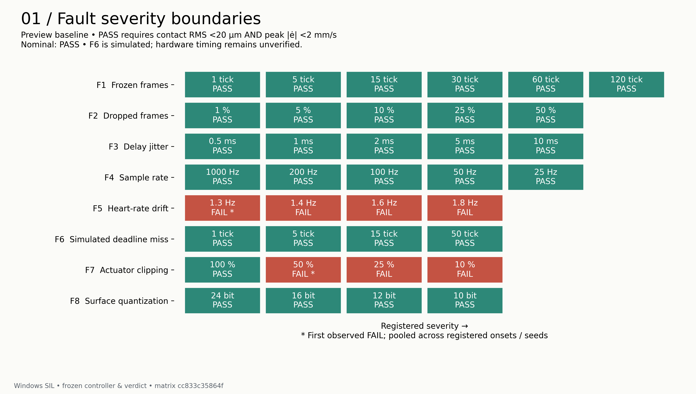
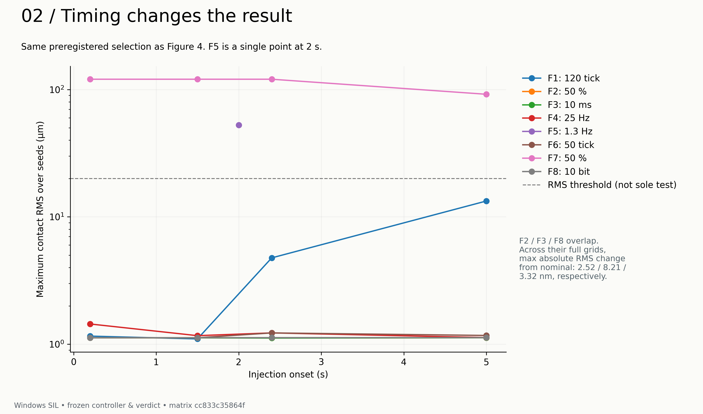
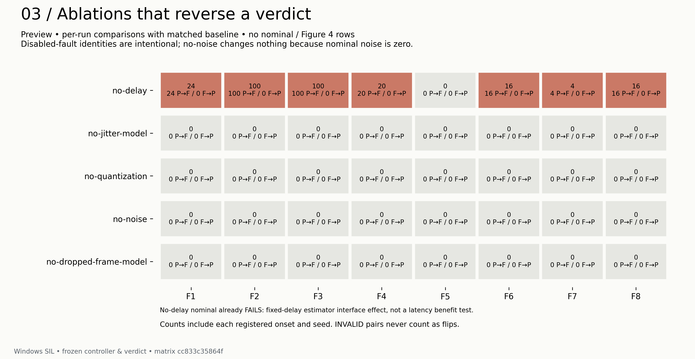
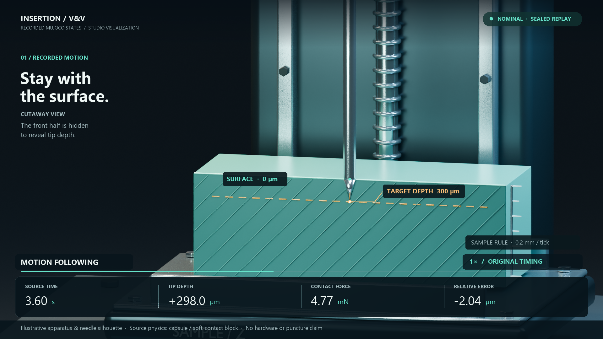
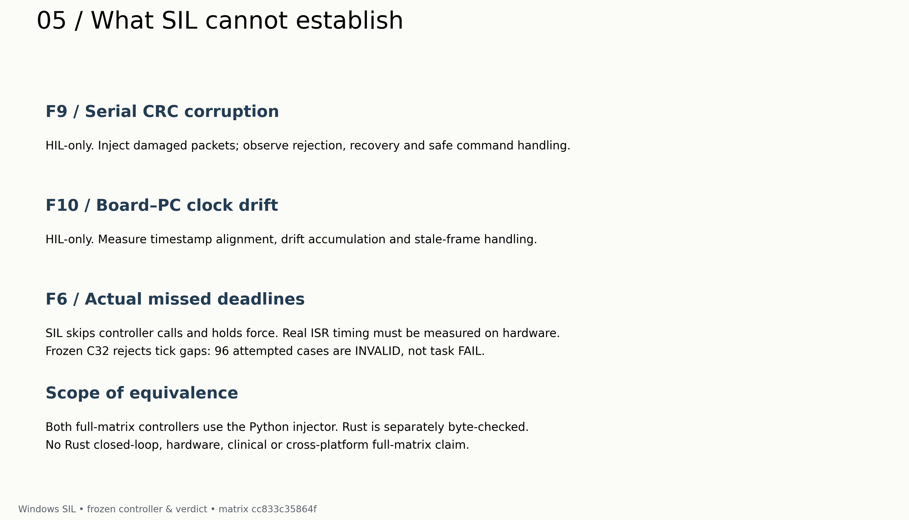
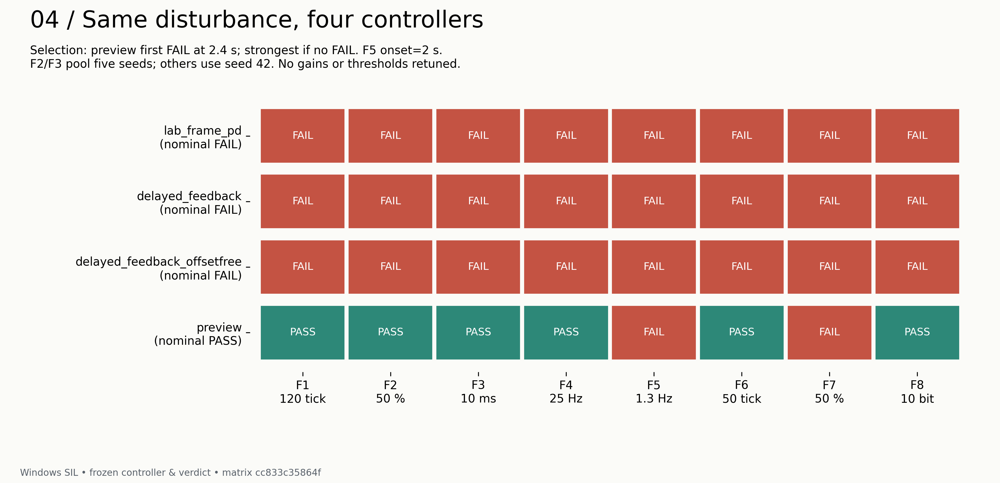

仿真通过之后，还能相信它到什么程度？
这个项目把针与运动组织的相互作用缩成了一维问题：针沿一条轴运动，组织表面按周期起伏，控制器需要维持目标相对插入深度。MuJoCo 提供被控对象；传感器给出的组织位置带有延迟，控制器只能依据收到的测量作出动作。
前面的工作里，固定频率的 preview 控制器已经把标称接触 RMS 做到了约 1.12 µm。RMS 是接触阶段相对深度误差的均方根；它能概括一段时间的偏差，却不能单独解释一次失败是怎么发生的。
接下来要问的是：组织频率偏离预测器、传感器连续读到旧值，或执行器输出不足时，原来的通过还能保持吗？以后把同一个控制器放到 STM32 板子上，仿真又能预测多少真实固件的行为？
软件基线已完成
本篇：软件证据已封存
故障 HIL 工具仍待开发
这里的 HIL 计划是让真实 MCU 运行控制器，MuJoCo 继续模拟针与组织。即使后续 HIL 通过，也不能直接推导出实体针、执行器或临床场景已经验证。
先写预测，再看结果。
Phase C 开始之前，先固定了八类故障、严重度档位、注入时刻、种子和消融组合。主矩阵比较 Python float64 与 C float32 控制器。一次场景运行 8 秒、控制周期 1 ms；接触评价窗口是 3–8 秒，判定要求 RMS 严格小于 20 µm，峰值误差速度严格小于 2 mm/s。
在看到数据之前，还写下了五条可能被推翻的预测。实验后保留原文，再在旁边写结果。这样后来的解释就有一个可以对照的起点。
| 预先写下的预测 | 封存矩阵给出的结果 |
|---|---|
| 25 Hz 采样会 FAIL | 不支持 · 四个注入时刻仍为 PASS。 |
| 频率漂移至 ≥1.6 Hz 会 FAIL | 支持；最轻的测试档位 1.3 Hz 已经 FAIL。 |
| 冻结 ≥60 tick 会 FAIL | 不支持 · 60/120 tick 的八个场景仍为 PASS。 |
| 瞬态故障在 2.4 s 注入最差 | 不支持 · F1 在 5 s 的 RMS 更大；F2/F3 几乎平坦。 |
| no-delay 消融翻转最多 | 形式上支持，但受帧龄 guard 结构性影响，解释有限。 |
这些计数包含两种精度、六种消融及旧控制器对照，不能当作 preview 的单一故障通过率。3,519 个场景完整复现；96 个不完整场景的重复记录也匹配，但依然是 INVALID。失败和无效都作为证据保留下来。


三个场景，让数字有了发生过程。
下面的视频全部从已经封存的轨迹渲染，没有为展示重跑仿真。三栏依次是正常、故障和差值 ×100；差值面板有独立尺度，下方曲线保留随时间变化的误差。视频是轨迹回放，不是真实硬件录像。
① 传感器冻结：PASS 的余量正在缩小
F1 连续冻结 120 tick，在 5 秒发生时，RMS 达到 13.318 µm；在 2.4 秒发生时则是 4.763 µm。两次都通过，但“刚接触组织的时刻一定最脆弱”这个预测没有经受住对照。看视频时，留意 5 秒附近误差曲线的变化。
run 936fad1f3eb8be94db2669e9 · 8 s / 24 fps · 打开视频
② 频率漂移：最轻的档位已经失败
预测器仍按 1.2 Hz 工作，而组织的基频在 2–5 秒逐渐变到 1.3 Hz。这个最轻的测试档位就使 RMS 达到 52.684 µm。它指出了当前固定频率模型的局限；本轮保留了失败，没有通过重新调参把它消掉。
run 5cbe77e0ab78b8f2363885a1 · 8 s / 24 fps · 打开视频
③ 输出限幅：平稳地停在错误深度
F7 的这段视频在 0.2 秒开始把指令限制到标称峰值的 50%。接触 RMS 为 120.485 µm，峰值误差速度却只有约 0.0091 mm/s：针的相对深度存在稳定偏差。相同故障若到 5 秒才注入，还会出现明显瞬态，所以不能把所有 F7 失败都概括成静态问题。
run d52175ce5d9f564540106f2a · 8 s / 24 fps · 打开视频
1.3 Hz 和 50% 是已测试档位里最早观察到 FAIL 的位置。没有在档位之间补采样，因此它们不是精确的连续物理边界。视频按已记录的选档规则展示；F7 的 onset 平局取最早时刻，是事后展示约定。


记录解释是怎样被修正的。
一个显眼的结果是 no-delay 带来 280 次 PASS→FAIL 翻转。但检查 nominal 后发现：零延迟输入本身已经触发冻结估计器的 15 ms 帧龄 guard，连无故障场景都 FAIL。这个消融回答了特定实现中的结构问题，不能拿来证明“低延迟有害”，也不能据此证明延迟建模的必要性。


外部审阅还提出过“丢帧、抖动、量化相对 nominal 的变化都小于 2 nm”。逐个检查 baseline 场景后，这句话被修正为 2.52、8.21、3.32 nm。这些是接触 RMS 指标的最大绝对变化，不是每一时刻的位置误差上界。原反馈、更正理由和后续接受记录一起留下。
同样，Python/C32 的一致率需要分母。1,782 对场景里，1,686 对有效且 verdict 全部一致；另外 96 对因 C32 接口拒绝跳号 tick 而无效。C32 的 F6 有效覆盖是 0/96。忽略它们，会让“一致”听起来比实际证据覆盖得更广。
展示也经过修正：热图补上 RMS，视频轴标签避开重叠，校验器改为在 python -O 下仍执行检查，公开页面去掉不存在的 ZIP 链接。它们不改变实验结果，却影响别人能否正确读懂和复核结果。
给未来的自己，留下一条能走回去的路。
只留下最终指标，几周之后就很难解释当时为什么选这些场景、哪一步改变了解释、哪个缺口仍未解决。这个项目把过程拆成了几个可以返回的节点：
- 注册：在矩阵运行前写下定义、随机表、阈值与预测，保留前瞻性修订。
- 实现：隔离故障注入层；对 Python/Rust 注入语义做字节级对照，原有数值代码与固件保持冻结。
- 运行与封存：保存每个场景的轨迹、真值和指标；生成矩阵和 SHA-256，保留 FAIL 与 INVALID。
- 审阅与修正：G、M0–M4 分阶段送审，复制完整回复，再记录采纳、纠正与理由。
- 表达：一页报告便于查数字；这篇图文视频记录保留问题如何演变；仓库保存可复核的材料。
当后来的解释变了，仍然能够找到当时的预测、原始数据和改变判断的那条证据。
一次展示重做：从两个几何体，到能看懂的实验场景
最初的三维回放只有胶囊和方块，虽然可核对轨迹，却难以让读者理解装置和动作。新版补上概念针座、导轨与样本台，用金属材质和灯光建立空间，再通过全景、接触剖视和慢放讲清过程。更精细的外观并没有增加物理证据：每帧位置仍来自同一条 nominal 记录，胶囊碰撞模型、阈值和结果都没有改变。
审阅还发现，单靠更好的材质并不能讲清插入：同色剖面让针看起来像贴着表面下滑。于是又降低了特写俯角，给截面加上斜线纹理，标亮真实表面，并补上 5 mm 场景比例尺和 0.2 mm 刻度说明。核对时同时看“针在表面上方”和“针已在表面下方”两种状态，而不只挑一张好看的静帧。


软件封存提交是 8f5dacad。本篇是在它之后扩写的项目记录；已封存的矩阵、场景与数值结论没有改变。后续文字更新和硬件结果应有自己的版本，旧证据继续可访问。
硬件回来之后，在同一份记录里对答案。
下一篇会把真实 MCU、连接方式、固件版本、板上计时和故障对照加入这里。计划使用 NUCLEO-H723ZG 运行冻结 C32 控制器，先验证链路与 lockstep，再进行独立 1 kHz replay。nominal 链路与计时验证沿用仓库的 hardware runbook。故障注入 HIL 工具尚未实现，不能直接照 runbook 执行下表全部故障。
| 要补的记录 | 工具状态 | 实验状态 |
|---|---|---|
| 实拍连接图与短视频 | 待整理拍摄材料，说明 MCU、PC 与仿真如何连接。 | 未拍摄 |
| nominal 链路与板上计时 | 已有 runbook、lockstep/replay 与计时分析工具。 | 未测量 |
| F1 / F5 / F7 对照 | 待开发：在独立 HIL 路径中接入故障场景；Rust 注入器当前仅完成离线语义对照。 | 未运行 |
| 真实 F6 时序 | 待开发：受控负载或单独记录哈希的实验固件变体；冻结固件本身不包含故障制造能力。 | 未验证 |
| F9 CRC / F10 时钟漂移 | 待开发：链路帧损坏与时钟漂移记录工具。 | HIL-only |
lockstep 由主机推进，主要用于检查 MCU 的数值输出是否与 host C32 一致，不是实时运行验证。已有的 1,686 对有效软件场景一致提供了对照基线；板上是否一致仍待测量。独立 replay 的计时、真实 F6 和链路/时钟故障，需要各自的证据。
已有的计时门槛是 compute p99 <100 µs、overrun = 0、jitter p99 <5 µs、栈余量 ≥4 KiB；这些是待检验目标，不是测量结果。若硬件与 SIL 不一致，记录首次出现差异的场景、原始数据和解释，后续修复作为新版本保留。


继续看视频，或沿证据往下读。
另外五段故障视频：丢帧、抖动、低采样率、跳过调用、量化
run cb371aa6a8b4699c44a67463 · 8 s / 24 fps · 打开视频
run 4cc48140796b57154c2914cd · 8 s / 24 fps · 打开视频
run 3e496a24b954adefa053a2e9 · 8 s / 24 fps · 打开视频
run c70974d5c087ce4ed6d543a9 · 8 s / 24 fps · 打开视频
run 4e5d669d00e7c45816ca858d · 8 s / 24 fps · 打开视频
F6 视频来自 Python 控制器的模拟跳过调用。它不能替代 C32 的缺失覆盖，也不能说明真实中断时序已经通过。
补充图：四个控制器在注册档位上的对照


- 一页结果报告 · 交互热图 · 全部图、视频与证据
- G–M4 审阅时间线 · 完整矩阵 · 汇总指标
- 9 个视频参考 run 的原始轨迹 · 公开产物校验清单
- 完整
evidence-runs.zip（约 3.79 GB）仅在本地交付；SHA-256。 - 运行前注册原文 · 持续更新的 GitHub 分支
矩阵 SHA-256cc833c35864f0f8cfa4d67671bf605a129c2b18a5f59710be41ee11e2eb98aa9
版本记录：M4 封存版是简短结果文章；本版补充三维插入回放、过程叙事、8 段故障视频、5 张图和待补硬件章节。数值证据保持原封存版本。硬件章节将在真实实验完成后追加。